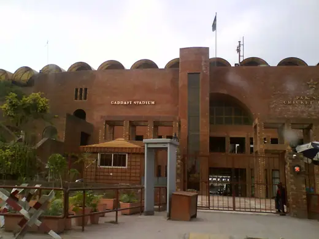
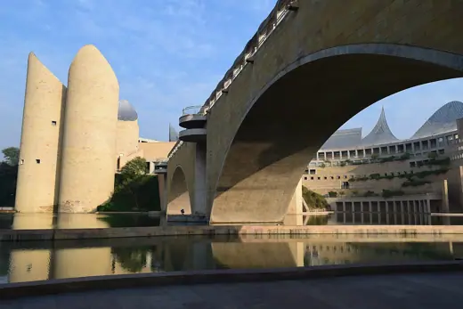

Buildings 255
Sort
 Jean-Marie Tjibaou Cultural Centre1998 · Noumea
Jean-Marie Tjibaou Cultural Centre1998 · Noumea Boa Nova Tea House1963 · Leça da Palmeira
Boa Nova Tea House1963 · Leça da Palmeira State Library of Queensland2006 · Brisbane
State Library of Queensland2006 · Brisbane Byker Wall1982 · Newcastle upon Tyne
Byker Wall1982 · Newcastle upon Tyne Tomb of Hafez1935 · Shiraz
Tomb of Hafez1935 · Shiraz Belarusian Memorial Chapel2016 · London
Belarusian Memorial Chapel2016 · London
Gaddafi Stadium1959 · Lahore India Habitat Centre1993 · New Delhi
India Habitat Centre1993 · New Delhi Alhamra Arts Council1992 · Lahore
Alhamra Arts Council1992 · Lahore Avicenna Mausoleum1954 · Hamadan
Avicenna Mausoleum1954 · Hamadan Casa Luis Barragán1948 · Mexico City
Casa Luis Barragán1948 · Mexico City Thorncrown Chapel1980 · Eureka Springs
Thorncrown Chapel1980 · Eureka Springs Virgilio Barco Library2001 · Bogotá
Virgilio Barco Library2001 · Bogotá CEPT University1966 · Ahmedabad
CEPT University1966 · Ahmedabad Anahuacalli Museum1963 · Mexico City
Anahuacalli Museum1963 · Mexico City Hassan II Mosque1993 · Casablanca
Hassan II Mosque1993 · Casablanca Jim Thompson House1959 · Bangkok
Jim Thompson House1959 · Bangkok Kingo Houses1958 · Helsingør
Kingo Houses1958 · Helsingør Museo de Arte Contemporáneo de Monterrey1991 · Monterrey
Museo de Arte Contemporáneo de Monterrey1991 · Monterrey Saint Benedict Chapel1988 · Sumvitg
Saint Benedict Chapel1988 · Sumvitg Faculty of Architecture, University of Porto1996 · Porto
Faculty of Architecture, University of Porto1996 · Porto Leça Swimming Pools1966 · Matosinhos
Leça Swimming Pools1966 · Matosinhos Jawahar Kala Kendra1991 · Jaipur
Jawahar Kala Kendra1991 · Jaipur Supreme Court of Israel1992 · Jerusalem
Supreme Court of Israel1992 · Jerusalem Bharat Bhavan1982 · Bhopal
Bharat Bhavan1982 · Bhopal
Virasat-e-Khalsa2011 · Anandpur Sahib Serralves Museum of Contemporary Art1999 · Porto
Serralves Museum of Contemporary Art1999 · Porto Gabriel García Márquez Cultural Center2008 · Bogotá
Gabriel García Márquez Cultural Center2008 · Bogotá Ahwahnee Hotel1927 · Yosemite Valley
Ahwahnee Hotel1927 · Yosemite Valley Tomb of Saadi1952 · Shiraz
Tomb of Saadi1952 · Shiraz Quba Mosque1986 · Medina
Quba Mosque1986 · Medina Hedmark Museum1979 · Hamar
Hedmark Museum1979 · Hamar Metso Library1986 · Tampere
Metso Library1986 · Tampere Solar do Unhão1963 · Salvador
Solar do Unhão1963 · Salvador Taliesin West1937 · Scottsdale
Taliesin West1937 · Scottsdale Hollyhock House1921 · Los Angeles
Hollyhock House1921 · Los Angeles Amdavad ni Gufa1995 · Ahmedabad
Amdavad ni Gufa1995 · Ahmedabad General Archive of the Nation1994 · Bogota
General Archive of the Nation1994 · Bogota Fogo Island Inn2013 · Fogo Island
Fogo Island Inn2013 · Fogo Island Fragrant Hill Hotel1982 · Beijing
Fragrant Hill Hotel1982 · Beijing Ningbo Museum of Art2005 · Ningbo
Ningbo Museum of Art2005 · Ningbo Indian Institute of Management Bangalore1983 · Bengaluru
Indian Institute of Management Bangalore1983 · Bengaluru Seema Malaka1976 · Colombo
Seema Malaka1976 · Colombo Gando Primary School2001 · Gando
Gando Primary School2001 · Gando National Olympic Stadium1964 · Phnom Penh
National Olympic Stadium1964 · Phnom Penh Kala Academy1983 · Panaji
Kala Academy1983 · Panaji